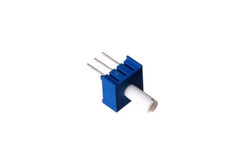
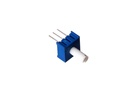
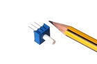
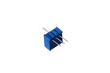

10 mm 10k Ohm Potentiometer - PTA103

Summary
Name: 10 mm 10k Ohm Potentiometer
ID: POTE-10-X-O103-01
Hex ID: PTA103
WebPage: https://github.com/oomlout/oomlout-OOMP/wiki/POTE-10-X-O103-01
Short URL: http://oom.lt/PTA103
Revision History: https://github.com/oomlout/oomlout-OOMP/blob/master/parts/POTE-10-X-O103-01/
| Type |
Size |
Color |
Description |
Index |
POTE
Potentiometer |
10
10 mm |
X
|
O103
10k Ohm |
01
|
Images



About
This part is awaiting a description.
Specifications
| Info |
Value |
| Type |
Potentiometer |
| Size |
10 mm |
| Description |
10k Ohm |
Extra Details
Spotted a mistake, want to add more? Let us know oomp@oomlout.com
All images and resources are licensed [CC BY-SA] unless otherwise stated (ie. the datasheets)